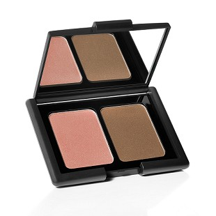
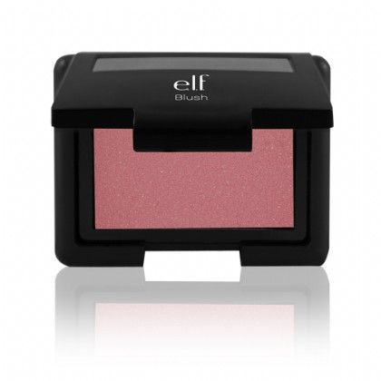
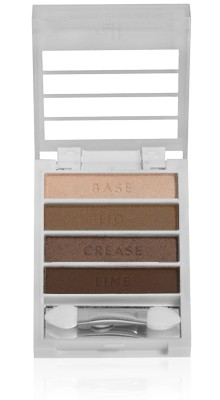
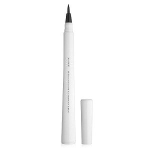
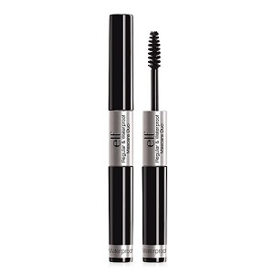

Dear reader,
I recently received a request to do an e.l.f. cosmetics review. So, I went to Target and picked up a couple of their products to try out for you guys. I already owned a few products from the line, but I wanted to try a few different ones to review for you girlies.
e.l.f. Contouring Blush & Bronzer ($3.00), Shade: St. Lucia-

I have had this for a while now and I love it. The bronzer is slightly shimmery and it gives a gorgeous glow to the skin. It is also a good bronze shade and does not make you look muddy or orange. The blush shade is beautiful! It is a peachy pink color with gold shimmer and gives the skin a flush like you just went for a walk on the beach. The packaging for this product is very convenient because it is slim, and perfect for travel. The black plastic compact has a huge mirror and does not easily get dirty (if it does, wipe it off with a wet wipe of cloth). I am obsessed with this duo and I want to try the other shades.
e.l.f. Blush ($3.00), Shade: Mellow Mauve-

In the past few months, I have gained an appreciation for mauve blushes because they look very natural and they are perfect year round. This particular blush is no exception. It is an iridescent mauve shade. It is slightly sheer, but DEFINITELY buildable. The packaging is similar to the Contouring Blush & Bronzer yet, it is smaller and has a smaller mirror. I love the e.l.f. blushes because they are inexpensive and have an amazing color selection. I will definitely be purchasing more shades. I highly recommend this product.
e.l.f. Flawless Eye-shadow ($2.00), Shade: Tantalizing Taupe-

This eye-shadow quad is AMAZING! It is super pigmented and the shades are buttery and easy to blend. There are 2 shimmery and 2 matte/satin shades in the palette. The first shadow is a muted champagne-pink matte shade and it is labeled BASE. The second eye-shadow labeled LID is a shimmery bronze shade. The third eye-shadow labeled CREASE is a shimmery copper shade. The fourth and final shade labeled LINE (to use as eyeliner, but can also be used in the crease or as a defining shade for the outer corner) is a matte brown shade. I LOVE this eye-shadow and will continue to use it and try out more of the shades.
e.l.f. Waterproof Eyeliner ($2.00), Shade: Coffee –

I typically do not use eyeliner however, this one is SUPER easy to use and pigmented. I highly recommend this product.
e.l.f. Regular & Waterproof Mascara Duo ($1.00), Shade: Black-

I only use waterproof mascara because I have very watery eyes and a bad habit of constantly rubbing my eyes. This mascara does not smudge and I really liked it. It holds a curl well, it is pigmented, and gives my eyelashes length and volume. For only $1, this is an amazing buy!
There you have it. If you have any requests for future posts, please let me know. Thank you so much for reading.
XOXO,
Mandy